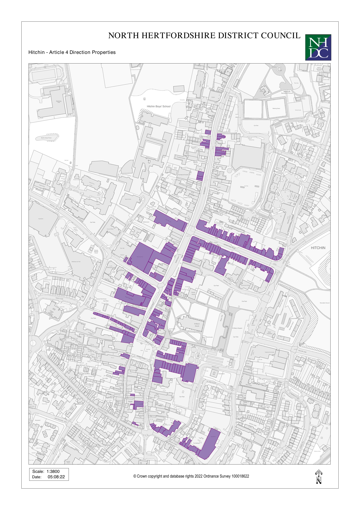
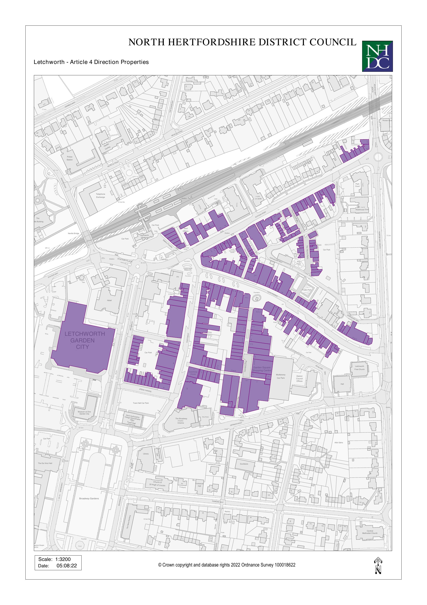
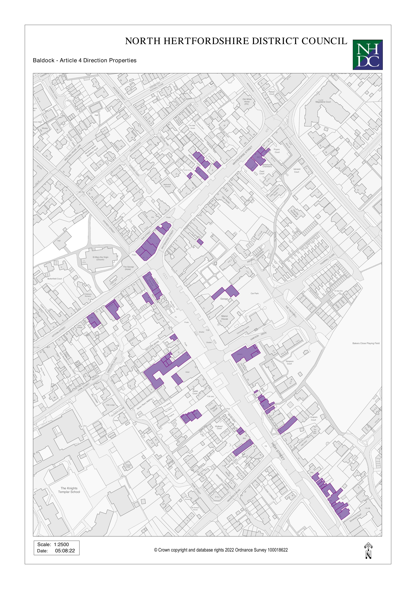
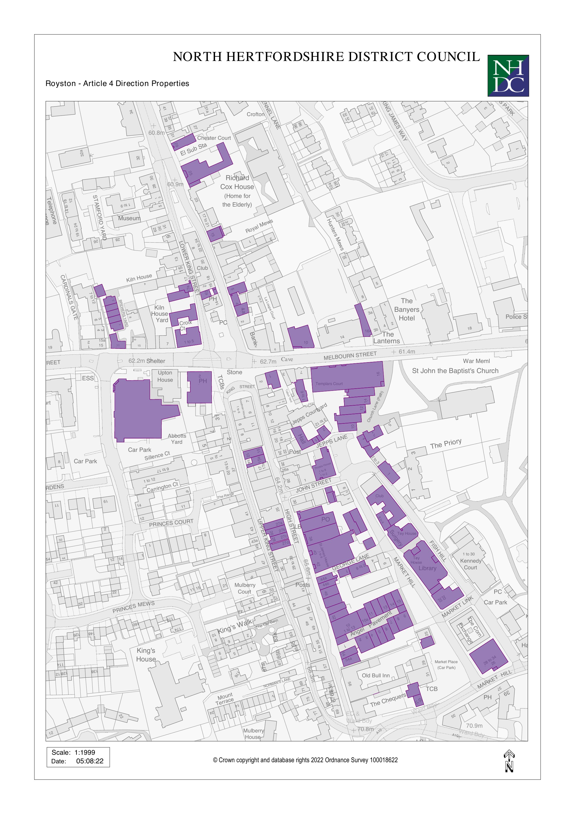

North Herts — tracing review, round 4
please double-check
Left: the traced shapes (red) on a live map. Right: the council's map. Findings are listed under each sheet.
Hitchin town centre
40 shape(s) drawn · amber = has a finding

Area 11 (Hitchin town centre — area 11 of 17): the snippet shows 3 shaded areas but 2 shapes were drawn.
Letchworth Garden City town centre
39 shape(s) drawn · amber = has a finding

Area 19 (Letchworth Garden City town centre — area 2 of 12): the snippet shows 3 shaded areas but 2 shapes were drawn.
Baldock town centre
33 shape(s) drawn · amber = has a finding

No issues found on this sheet.
Royston town centre
40 shape(s) drawn · amber = has a finding

No issues found on this sheet.